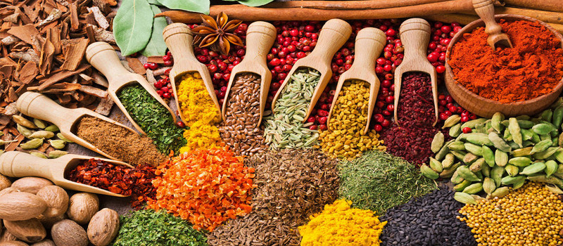

Что такое пряности и специи


По материалам книги Вильяма Васильевича Похлёбкина
" Все о пряностях. "
Народные рецепты исцеления"
Уважаемый Читатель - после ознакомления с Книгой
рекомендую Вам заказать ее бумажное издание.
" Все о пряностях. "
Народные рецепты исцеления"
Уважаемый Читатель - после ознакомления с Книгой
рекомендую Вам заказать ее бумажное издание.
Книга рассказывает о пряностях. Читатель узнает об их происхождении, об увлекательной истории поисков пряностей.
Автор дает классификацию пряных растений, знакомит со свойствами, качеством, значением, применением, нормами и правилами употребления отдельных видов пряностей, приводит примеры их сочетания с пищей и друг с другом.
Книга научит правильно использовать имеющиеся в продаже пряности, познакомит с пряными растениями нашей страны.
Приложением к книге являются рецепты приготовления блюд с пряностями.
- Что такое пряности?.
- История поисков пряностей и борьбы за них.
- Классификация пряностей.
- Классические пряности.
- Бадьян (Anisum stellatum).
- Ваниль.
- Гвоздика.
- Имбирь (zingiber officinale rosс).
- Калган[7] (правильнее галгант).
- Кардамон (Elettaria Cardamomum).
- Корица.
- Куркума (curcuma longa l.).
- Лавр (lauras nobilis l.).
- Мускатный цвет и мускатный орех .
- Перцы.
- Перцы красные (капсикумы).
- Псевдоперцы (ксилопии).
- «Душистые перцы».
- Розмарин (rosmarinus officinalis).
- Цедра.
- Шафран (crocus sativus l.).
- Пряные овощи.
- Луковичные.
- Корнеплоды.
- Пряные травы.
- Ажгон (caram ajowan bent, et hook, trachyspermum copticum L.).
- Аир (acorns calamus l.).
- Анис (pimpinella anisum l.; anisum vulgare gaertn.).
- Базилик (Ocimum basilicum L.).
- Горчица.
- Гравилат (Geum urbanum L.).
- Донниксиний (melilotus coeraleus Lam.; Trigonella coeralea).
- Душица (origanum vulgare l.).
- Дягиль (angelica archangelica l.; Angelica officinalis Hoffm.).
- Иссоп (hyssopus officinalis l.).
- Калуфер (tanacetum balsamita l., pyretram balsamita) .
- Кервель (anthriscus cerefolium hoffm.).
- Кервель испанский (myrrhis aromatica L. Myrrhis odorata Scop.).
- Кмин (cuminum cyminum l.).
- Колюрия (coluria geoides).
- Кориандр (coriandrum sativum l.).
- Крессы.
- Лаванда (lavandula vera dc; lavandula angustifolia Mill.).
- Любисток (levisticum officinale koch.).
- Майоран (origanum majorana l.; majorana hortensis).
- Мелисса (melissa officinalis l.).
- Мелисса турецкая, или змееголовник молдавский (dracocephalum moldavica l.).
- Можжевельник (juniperus communis l.).
- Мята (mentha).
- Полынь (artemisia).
- Рута (ruta graveolens l.).
- Тимьян (thymus vulgaris).
- Тмин (carum carvi l.).
- Укроп (anethum graveolens l.).
- Фенугрек,или пажитник (trigonella foenum graecum l.).
- Чабер (satureja hortensis l.).
- Чабер зимний (satureja montana L).
- Чабрец (thymus serpyllum l.).
- Чернушка (nigella sativa l.).
- Шалфей (salvia officinalis l.).
- Эстрагон (artemisia dracunculus l.).
- Смеси, или комбинации пряностей.
- Экстракты, концентраты и искусственные заменители пряностей.
- Наука употребления пряностей.
- Цели применения.
- Действие пряностей.
- Отрицательные свойства пряностей.
- Чистота, аккуратность, тщательность.
- Ловкость, сноровка, «легкая рука».
- Знание меры, количества, норм.
- Форма и время внесения пряностей. Температурный режим.
- Среды.
- Основы-эмульсии.
- Пряности-основы и основные пряности.
- Пряности и соль.
- Подбор пряностей к блюду. Их сочетаемость с пищей и друг с другом.
- Всюду ли можно применять пряности?.
- Приготовление и хранение пряностей.
- Приложение.